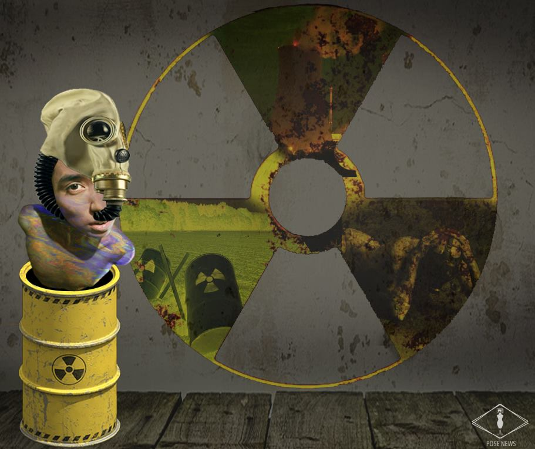

波士新聞網 POSE NEWS
2015
創作說明
有鑑於主流新聞媒體為了抓住閱聽眾目光、創造話題，而不惜聳動、腥羶色且娛樂化。我和幾位同學便開始思考有什麼方法能夠在保持新聞品質的前提下，抓住閱聽眾目光並具有話題性。於是我們決定運用生動有趣的圖像創作詮釋每一則新聞的概念。為符合社群網路快速閱讀的使用習慣，每則新聞採重點式報導，並提供延伸閱讀連結使閱聽眾能深入瞭解新聞。
粉絲專頁連結創作工具
Photoshop

粉絲專頁封面
以強烈表情及肢體為視覺重心抓住眼球，跳脫平常記者採訪的情境與框架，引導觀者感受到不同新聞呈現方式的可能。
高鐵面臨強制還債 黔驢技窮恐破產
以詼諧的方式，結合擬人化的湯瑪士小火車，表現高鐵公司面臨困境的境況。
與Spotify拆夥 泰勒絲：音樂不應免費
以泰勒斯推開Spotify為主視覺，並以各種串流音樂平台名稱為背景，將其撕開，展現撕破局的視覺訴求。

核四議題
以核廢料桶及防毒面罩為主視覺，背景則是核能污染的畫面。